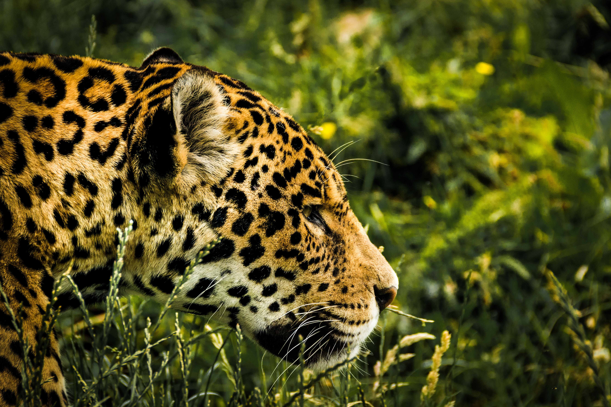
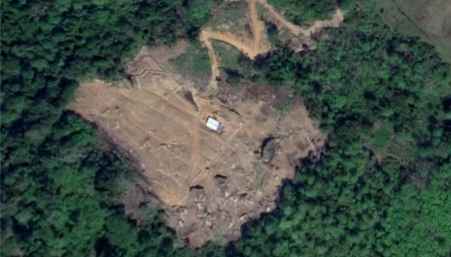
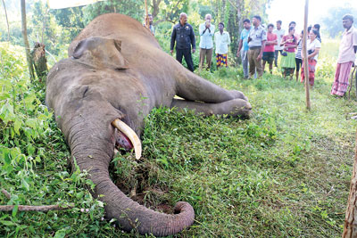

Yala National Park

Willpattu National Park

- Wilpattu National Park is home to a small but significant population of leopards.
- Located in Sri Lanka's North Western and North Central provinces, the park has a unique variety of habitats
including dense scrubland and forest that provide good cover for leopards to rest and ambush prey.
- Researchers have used camera traps to estimate there are around 20-30 leopards inhabiting the 151,400 hectare
park.
Horton National Park

- Horton Plains National Park, located in the central highlands of Sri Lanka, is home to a population of leopards.
- A study conducted in the park used remote cameras to estimate the leopard density, finding approximately 11.7
adult individuals per 100 square kilometers.
- The study also estimated the density of prey, with Sambar density being 178 per square kilometer within the
central grasslands, which is a significant resource for leopards.
The Leopard Project (LEOPOCON) is an organization dedicated to conserving leopards and
resolving human-leopard conflicts in Sri Lanka.
learn more about their conservation efforts for leopards in Sri Lanka.
Threat Section.
Habitat Loss And Fragmentation..

- Habitat loss and fragmentation in Sri Lanka have significant implications for wildlife conservation.
- The country's unique ecosystems, such as the Central Highlands, are home to endangered species like the Sri
Lankan leopard.
- Research conducted in Horton Plains National Park, located in the Central Highlands, has provided important
insights into the density of leopards and their prey.
- The study estimated a leopard density of 11.7 adult individuals per 100 square kilometers and highlighted the
significance of the central grasslands as a key resource for prey, particularly Sambar, which in turn, is an
important resource for leopards[1].
Poaching And Illegal Wild Trade
- Poaching and the illicit trade of wildlife in Sri Lanka pose significant threats to the country's biodiversity
and conservation efforts. Some key aspects of this issue include:
- 1. Illegal capture and internal trade of wild Asian elephants: A study documented 55
cases of illegally
traded elephants in Sri Lanka between January 2008 and December 2018. Nearly equal numbers of male and female
elephants were traded, and more than 50% of them were juveniles aged ≤5 years.
- 2. Conservation challenges and risks for wildlife officers: At least 80 wildlife officers
in Sri Lanka
have been killed in the line of duty since 1949, with the major causes of death being terrorist attacks,
encounters with free-ranging Asian Elephants, and confrontations with wildlife criminals].
- 3. Obstacles to wildlife disease surveillance: A study conducted in Sri Lanka identified
obstacles to
wildlife disease surveillance, including lack of transport facilities, skilled staff, infrastructure, human
resources, training, and a mandate for getting involved in wildlife disease surveillance.
- 4. Convention on International Trade in Endangered Species of Wild Fauna and Flora (CITES): CITES is a
global agreement that regulates the trade of endangered species, with Sri Lanka being a member. Species listed in
Appendix I and Appendix II are subject to strict regulations to ensure that trade does not threaten their
survival.
- Addressing poaching and the illicit trade of wildlife in Sri Lanka requires comprehensive conservation
strategies, including strengthening enforcement efforts, raising public awareness, and improving the capacity of
wildlife officers.
